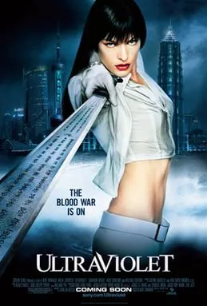

The genetics
The world of the film is created by a genetic catastrophe. An illegal laboratory trying to create super-soldiers releases a virus that overwrites human DNA, turning people into hemophages, vampire-like beings whose genes eventually unravel and kill them. Daxus, who as a laboratory assistant deliberately caused the accident to gain power, rules a genocidal regime against the hemophages, has made eight clones of himself, and plans to use one of them, Six, to carry a new pathogen whose antidote he would sell to keep everyone in his power. The sympathetic scientist Garth helps Violet, but genetic and viral science otherwise serves military ambition and tyranny. The sources disagree on details: in one summary the boy carries a virus against hemophages, and in another a toxin against humans. A virus that rewrites the genome of an adult and gives superhuman abilities is far beyond any real gene therapy.
How genetics is portrayed
- Overall portrayal of genetics
- negative Genetic and viral engineering serve military aims and tyranny, and the film presents them as the root of a dystopia.
- Outcome of the genetic intervention
- negative The virus mutates part of humanity, sparks a war and a fascist regime, and the clone Six is used as a living weapon who dies before he is revived.
- Illegal super-soldier laboratory
- villain Aim: military (negative). In the backstory its scientists try to create super-soldiers to subjugate and exterminate the Third World, and the project releases the hemophage virus. The film presents the programme as the original crime that ruined the world.
- Vice-Cardinal Ferdinand Daxus
- villain Aim: power, commercial (negative). He deliberately released the virus, cloned himself and plans to spread a new pathogen and sell the antidote to keep total control. The film makes him the ruthless main villain, killed by Violet.
The story
In the 21st century, a failed attempt to create super-soldiers in an illegal laboratory releases a virus that turns part of the population into hemophages, vampire-like people who are stronger, faster and smarter than humans but die young. Humanity wages war on them under the ArchMinistry, a fascist world government led by Vice-Cardinal Ferdinand Daxus. Violet, a hemophage in the resistance, steals what is said to be a weapon against her kind and finds it is a nine-year-old boy, Six, a clone of Daxus said to carry a deadly virus. Refusing to let him be killed, she goes on the run with him, pursued by Daxus's forces and by the hemophage leader Nerva. She learns that Daxus plans to release a toxin and sell the antidote in order to control the population, and that he is a hemophage himself who deliberately caused the original accident. Violet kills Daxus, and Six, who had died, is revived.